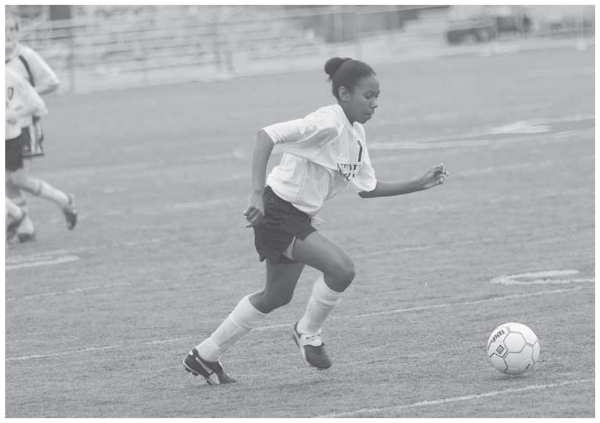
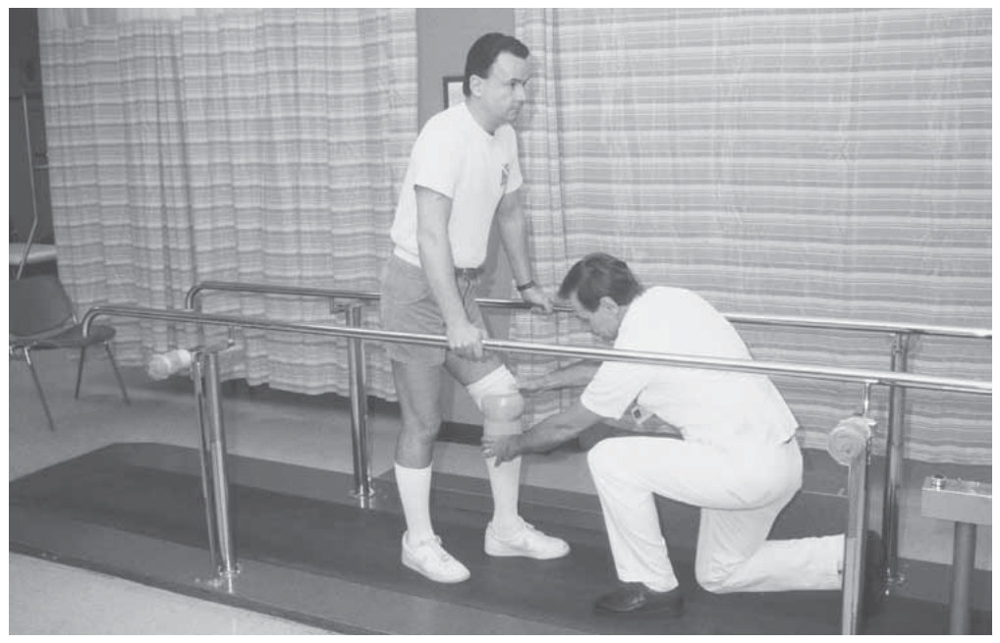

Chương 10 — Triển khai tiếp cận do ràng buộc dẫn dắt
Triển khai cách tiếp cận
do ràng buộc
dẫn dắt
Các nghiên cứu tình huống
DÀN Ý CHƯƠNG
Luyện tập và tiêu điểm chú ý bên ngoài
Động lực học của việc học cú chip trong bóng đá
Sự khác biệt cá nhân ở dáng đi của người cụt chi
Tổ chức luyện tập cho binh sĩ
Hướng dẫn dành cho học viên học lái xe
Dùng mô phỏng để định hướng việc học của học sinh
CHƯƠNG 10 CHƯƠNG 10
Trong chương cuối này, chúng tôi đưa ra một số ý tưởng về cách bạn có thể tiếp cận một vấn đề vận động cụ thể thông qua một nghiên cứu tình huống. Với mỗi vấn đề, chúng tôi đã cung cấp thêm các câu hỏi và bài tập vận dụng. Chúng tôi cũng đưa vào các bài đọc và nghiên cứu liên quan của chương nếu bạn muốn tìm hiểu thêm. Hãy ghi nhớ rằng các giải pháp gợi ý không nhất thiết là những câu trả lời đúng duy nhất. Thay vào đó, mỗi nghiên cứu tình huống dựa trên những hiểu biết lý thuyết được trình bày trong các chương trước và chứa một trong nhiều câu trả lời khả dĩ. Chương cuối này chỉ nhằm giúp bạn đánh giá mức độ hiểu biết của mình và bổ sung cho việc học của bạn.
Luyện tập và tiêu điểm chú ý bên ngoài
XÁC ĐỊNH VẤN ĐỀ
Làm thế nào để cung cấp phản hồi và hướng dẫn cho người học và người thực hiện ở trình độ cao trong quá trình luyện tập
BỐI CẢNH
Luyện tập trong thời gian dẫn đến một cuộc thi bóng bầu dục quốc tế
CÁC RÀNG BUỘC CHÍNH
Cơ thể (tích hợp phản hồi vào luyện tập một mẫu hình vận động đã được thiết lập vững chắc), nhiệm vụ (đá bóng để đáp ứng các ràng buộc về độ cao, khoảng cách và độ chính xác)
Một số vận động viên dùng chiến lược tiêu điểm bên ngoài một cách trực giác, chẳng hạn như Jonny Wilkinson, người đã ghi những điểm quyết định trong những giây cuối của Cúp Thế giới Bóng bầu dục 2003. Jonny Wilkinson tiết lộ bí quyết đá phạt thành công của mình: một người phụ nữ tưởng tượng tên là Doris. Năm năm trước đó, khi Wilkinson đang chuẩn bị cho trận đấu thử đầu tiên gặp đội tuyển quốc gia Úc tại Brisbane, anh gặp phải những vấn đề nghiêm trọng với kỹ thuật đá của mình. Dù đã tập luyện hàng giờ với huấn luyện viên đá bóng của đội Anh, Dave Alred, Wilkinson vẫn tiếp tục đá bóng loạn xạ khi thời gian đếm ngược đến giờ khai cuộc. Cuối cùng Alred bảo Wilkinson quên kỹ thuật và cột môn bàn thắng đi. Lời khuyên của Alred cho Wilkinson là hãy tưởng tượng một phụ nữ ngồi trong đám đông phía sau cột môn và cố gắng đá trúng người đó. “Bà ấy được gọi là Doris; chúng tôi chọn một chỗ ngồi cho bà ấy và cố đá trúng bà ấy,” Wilkinson tâm sự trước trận đấu bảng C của đội tại World Cup gặp Samoa ở Melbourne. “Rồi chúng tôi tưởng tượng bà ấy đang đọc báo và chúng tôi cố đá bay tờ báo khỏi tay bà ấy. Khi mọi thứ khá hơn một chút, chúng tôi tưởng tượng bà ấy đang cầm một lon cola và chúng tôi cố đá trúng lon đó.”
Kết quả không đến ngay lập tức. Đội Anh bị đội Úc đánh bại với tỷ số kỷ lục 76-0. Tuy nhiên, về sau kỹ thuật hình dung bất thường đó đã mang lại thành quả. “Ý tưởng là thay vì nhắm vào cột môn, bạn nhắm vào một vật cụ thể cách đó 30 yard [27 mét], và cách đó chúng tôi đã thay đổi trọng tâm của chỗ tôi nhắm. Nó khiến tôi thực sự đá xuyên qua bóng và nó đã hiệu quả.”
Wilkinson đã ví một buổi luyện tập như một trò ghép tranh. “Mỗi tối khi bạn đi ngủ, có thể có điều gì đó trong đầu bạn mà bạn phải giải quyết. Điều đó làm xáo trộn hộp tranh và khi bạn đá vào ngày hôm sau, bạn không còn là sản phẩm hoàn chỉnh nữa. Mục tiêu của mỗi buổi đá, lý do tôi luyện tập theo cách tôi làm, là tìm ra những mảnh đó và, vào cuối buổi, xếp chúng lại vào hộp.” Khi Wilkinson lo ngại mình đang ở trong giai đoạn trì trệ, anh sẽ đổi tiêu điểm bằng cách “làm vài cú Doris” hoặc vài cú “seven lười”—một cú đá gôn lob bằng gậy 7-iron, trong đó anh cố cho bóng rơi đúng vào xà ngang. “Điều đó xóa sạch sự hoảng sợ vì cố đá cho qua xà hoặc đúng đường—tất cả những gì bạn nghĩ là trọng lượng; bạn coi đường bóng là đương nhiên.”
Phóng viên thường trú NZPA, Sydney, Úc. Được sao chép với sự cho phép của Otago Daily Times, 27-October 2003 http://www.odt.co.nz
CÂU HỎI PHÂN TÍCH
1. Kinh nghiệm của vận động viên quốc tế thành công này cho bạn biết gì về tính ổn định của các mẫu hình vận động đã được tiếp thu?
2. Tình huống đời thực này gợi ý điều gì về cách các hướng dẫn và phản hồi nên được truyền đạt tới các vận động viên?
3. Bạn có dùng cách tiếp cận tương tự với một người mới bắt đầu hoàn toàn trong việc đá bóng bầu dục không?
Bất cứ khi nào luyện tập đá bóng trở nên thách thức đối với Johnny Wilkinson, nghĩ đến việc đá trúng Doris lại giúp ích cho anh!
© Reuters/Corbis
Lưu ý: Do hạn chế về bản quyền, mục này đã bị gỡ bỏ.
BÀI TẬP VẬN DỤNG
Hãy chọn một môn thể thao hoặc hoạt động thể chất theo ý bạn và xác định các kỹ năng then chốt liên quan. Dưới các ràng buộc nhiệm vụ của môn thể thao hay hoạt động thể chất đó, hãy xem xét cách một huấn luyện viên có thể khuyến khích tiêu điểm chú ý bên ngoài trong quá trình luyện tập các kỹ năng then chốt.
BÀI ĐỌC
Các chương 8 và 9; Wulf và Shea (2002)
Động lực học của việc học cú chip trong bóng đá
XÁC ĐỊNH VẤN ĐỀ
Quét các mẫu hình phối hợp ban đầu và theo dõi tiến trình của một người học thực hiện đường chuyền trong bóng đá
BỐI CẢNH
Câu lạc bộ bóng đá nữ giải trí
CÁC RÀNG BUỘC CHÍNH
Cơ thể (thiếu kinh nghiệm), nhiệm vụ (mục tiêu—nhấc bóng qua đối phương đến đồng đội)
Kirsten bắt đầu tự hỏi mình đã vướng vào chuyện gì. Các bạn cùng phòng đã khuyến khích cô thử sức với câu lạc bộ bóng đá địa phương vì cô khỏe mạnh và họ thiếu người. Tuy nhiên, trước đó cô thậm chí chưa từng đá một quả bóng đá nào. “Lúc đầu chúng ta sẽ tập trung vào những điều cơ bản—chuyền, sút và tranh chấp—trước khi bắt đầu làm việc với một số kỹ năng cụ thể,” huấn luyện viên đã nói với cả đội gồm 15 cầu thủ. Những buổi tập đầu tiên diễn ra khá ổn đối với Kirsten. Cô không gặp khó khăn gì khi theo kịp những người khác trong các bài chạy tập và chạy đệm, và thậm chí đã ghi được một bàn trong một trận đấu tập. Nhưng các buổi luyện kỹ năng lại tỏ ra khó khăn hơn một chút.
“Xin lỗi huấn luyện viên, bóng dường như không đi đến chỗ tôi muốn,” Kirsten nói sau khi một đường chuyền định sẵn bị cắt và làm vỡ cửa sổ phòng thay đồ bên cạnh. Huấn luyện viên nhanh chóng nhận ra Kirsten cần được giúp đỡ—trước khi cô làm hỏng thêm thứ gì đó nữa!
Huấn luyện viên kiểm tra kỹ thuật đá bóng của Kirsten. Cô nghi ngờ rằng các mẫu hình phối hợp ban đầu của Kirsten khi đá bóng bắt đầu hạn chế khả năng chuyền chính xác của cô. Khi Kirsten được yêu cầu chuyền một quả bóng đứng yên cho đồng đội, một số vấn đề then chốt lập tức lộ ra. Trước hết, cô có xu hướng đặt chân không đá khá xa chỗ cô tiếp xúc với bóng. Bên cạnh đó, thân trên của cô dường như ngả ra sau ở hầu hết các lần thử. Và đôi khi cô có xu hướng đá thẳng qua đường giữa của quả bóng một cách không phân biệt, dẫn đến hóa đơn thay kính cửa sổ lớn.
Huấn luyện viên quyết định thao tác các ràng buộc nhiệm vụ để xác định mức độ linh hoạt trong kỹ thuật của Kirsten. Trước hết, cô đặt một rào chắn cao 1 mét cách Kirsten 2 mét và yêu cầu cô luân phiên chuyền bóng dưới và trên rào. Kỹ năng biến đổi này buộc Kirsten phải thường xuyên tìm kiếm các vị trí cơ thể và chỗ đặt chân phù hợp để thực hiện đường chuyền mong muốn. Sau vài phút luyện tập, huấn luyện viên yêu cầu đồng đội của Kirsten đứng sau rào và làm mục tiêu nhận bóng. Cuối cùng, ở phiên bản nâng cao hơn của bài tập, cô yêu cầu đồng đội Kirsten lăn bóng dưới rào về phía Kirsten rồi di chuyển sang trái hoặc phải để nhận đường chuyền. Khi Kirsten bắt đầu cho thấy sự tiến bộ trong những trò chơi biến đổi này, huấn luyện viên tiếp tục điều chỉnh một số ràng buộc then chốt. Ví dụ, vào một số thời điểm cô tăng chiều cao rào để khuyến khích Kirsten nhấc bóng cao hơn. Cô cũng thường xuyên khuyến khích Kirsten đổi vị trí và vai trò luyện tập với đồng đội và quan sát đồng đội thực hiện kỹ năng.
Kirsten bắt đầu nhận thấy sự tiến bộ của mình. “Mất khá lâu tôi mới đưa được bóng qua rào, nhưng sau khi làm được vài lần, mọi thứ dường như đã khớp lại với nhau,” cô nhận xét. Huấn luyện viên cũng hài lòng với sự tiến bộ của cô. “Tốt lắm, Kirsten. Nhưng giờ tôi muốn thấy con dùng những kỹ năng này trong một trận đấu—con sẽ đá ở vị trí tiền vệ trong trận đấu ngày thứ Bảy!” Kirsten rên lên lo lắng và hỏi, “Có cửa sổ nào gần sân đấu không?”
Thao tác các ràng buộc nhiệm vụ có thể khuyến khích người học khám phá các mẫu hình phối hợp ban đầu.

CÂU HỎI PHÂN TÍCH
1. Nếu bạn là huấn luyện viên của Kirsten, bạn sẽ đánh giá kỹ thuật đá bóng của cô ấy như thế nào?
2. Bạn có thể nghĩ ra những bài tập nào khác để đánh giá tiến bộ của Kirsten trong kỹ năng sút chip này? Những ràng buộc then chốt nào khác bạn có thể thao tác để định hướng sự tìm kiếm của cô ấy?
3. Tại sao không chỉ đơn giản nói cho Kirsten biết vấn đề trong kỹ thuật của cô ấy là gì và trình diễn mẫu để chỉ cho cô ấy cách thực hiện nhiệm vụ?
BÀI TẬP VẬN DỤNG
Hãy xây dựng một chương trình luyện tập 6 tuần cho đội bóng của Kirsten, trọng tâm chính là cải thiện độ chính xác khi chuyền bóng. Hãy xem xét các yếu tố sau trong kế hoạch của bạn:
Có 15 cầu thủ và 1 huấn luyện viên. Có thể sử dụng cơ sở vật chất và thiết bị tập luyện (bạn cũng có thể mượn một máy quay video).
Bạn có 90 phút cho mỗi buổi và 2 buổi tập mỗi tuần.
Hai cầu thủ đang hồi phục sau chấn thương chân và chỉ có thể tập chạy bộ nhẹ trong 3 tuần đầu.
Bạn có thể nghĩ ra những trò chơi biến đổi nào nhấn mạnh kỹ năng chuyền bóng?
Bạn nên cung cấp những hướng dẫn bằng lời nói và phản hồi nào, và vào thời điểm nào?
BÀI ĐỌC
Các chương 4 và 5; Chow et al. (2006)
Sự khác biệt cá nhân ở dáng đi của người cụt chi
XÁC ĐỊNH VẤN ĐỀ
Đề xuất các bài tập phục hồi cho bệnh nhân cụt chi dưới gối với các mẫu hình dáng đi khác nhau
BỐI CẢNH
Nhà trị liệu cung cấp phục hồi lâm sàng sau một chấn thương lớn
CÁC RÀNG BUỘC CHÍNH
Cơ thể (mất bàn chân và mắt cá ở một bên), nhiệm vụ (mục tiêu—đi lại một cách chức năng và hiệu quả), môi trường (sự kỳ thị của xã hội đối với người khuyết tật)
Trong năm qua, A.J. và T.T. đã gặp phải những tai nạn chấn thương dẫn đến việc cụt bàn chân và mắt cá trái dưới gối. Cả hai bệnh nhân đều nói rằng họ muốn bắt đầu đi lại lại càng sớm càng tốt để có thể trở lại cuộc sống bình thường. “Mục tiêu ngắn hạn của tôi là đi lại không cần hỗ trợ rồi cuối cùng trở lại làm việc,” A.J. nói. Tuy nhiên, động lực chính của T.T. lại khác. Anh nói, “Tôi cảm thấy người ta cứ nhìn tôi vì tôi đi khập khễnh. Tôi chỉ mong nó không rõ ràng thế.” Bệnh viện đã cung cấp cho cả hai bệnh nhân chân tay giả dưới gối. Sau khi hồi phục sau các tai nạn, A.J. và T.T. làm việc với Charlie, một nhà trị liệu vận động, trong chương trình phục hồi của họ.
Charlie gặp A.J. và T.T. lần đầu trong vòng vài ngày cách nhau. Trong lần chẩn đoán ban đầu, Charlie nhận thấy một số điểm tương đồng giữa họ. Cả hai đều là nam, và gần như cùng tuổi, chiều cao và cân nặng. Tuy nhiên, như Charlie sớm phát hiện, dù mỗi người đều thích nghi với chân giả trong vài tuần đầu, đó là nơi sự tương đồng kết thúc.
Ví dụ, A.J. dường như thích nghi với chân giả mới tốt hơn T.T., người có kỹ thuật đi lại chậm và không đối xứng rõ rệt. Charlie cũng nhận thấy A.J. thích nghi tốt hơn với những thay đổi nhỏ về tốc độ khi đi trên máy chạy bộ có động cơ. Ngược lại, chiều dài bước chân của T.T., đặc biệt ở bên cụt, ít biến thiên hơn khi Charlie thay đổi tốc độ máy, tạo ra một sự bất đối xứng trông khá vụng về giữa các bước của T.T. Charlie tin rằng sự làm quen nhanh hơn của A.J. là do anh khỏe hơn và có sức mạnh chân tốt hơn. A.J. đã làm nhân viên giao thư hơn 8 năm, dù hiện anh chỉ được hỗ trợ trong bộ phận phân loại thư. Tuy nhiên, công việc nhân viên văn phòng của T.T. hiếm khi cho anh cơ hội vận động cơ thể.
Học lại các mẫu hình vận động sau chấn thương đòi hỏi tính biến thiên trong bối cảnh luyện tập cũng nhiều như khi tiếp thu một kỹ năng lần đầu. Ví dụ, người cụt chi dưới có thể được lợi khi đi lại trong môi trường lộn xộn thay vì chỉ trên máy chạy bộ.
© Pulschen/Custom Medical Stock Photo

Một số khác biệt thú vị hơn giữa hai bệnh nhân lộ ra khi Charlie quan sát họ đi lại quanh phòng khám. Để tăng độ phức tạp cho nhiệm vụ đi lại, Charlie đặt một số vật trên sàn làm chướng ngại vật. Trong tình huống này, A.J. hoàn thành lộ trình định sẵn nhanh hơn T.T. nhưng lại có xu hướng mắc nhiều lỗi hơn. Ví dụ, anh thường vô tình chạm chân giả vào chướng ngại vật, khiến anh vấp. Dù T.T. mất nhiều thời gian hơn để đi qua sàn phòng khám, anh lại thích dùng bước dài hơn ở chân lành để bước qua các chướng ngại vật.
Xem xét tất cả thông tin này, Charlie đã đưa ra một số đề xuất khác nhau cho bệnh nhân của mình như một phần trong quá trình phục hồi. Với A.J., Charlie đề xuất các nhiệm vụ thăng bằng và đi lại có yêu cầu độ chính xác đáng kể. Ví dụ, anh đưa cho A.J. một cái thang dây để đặt trên mặt đất và tập đi qua các khe. Anh nhận ra T.T. cần cải thiện thể lực chung và sức mạnh chân, đồng thời phát triển sự tự tin để anh dùng chân cụt thường xuyên hơn. Charlie giới thiệu T.T. đến một phòng tập thể dục địa phương và một số bài tập rèn luyện thể lực cụ thể. Anh cảnh báo cả A.J. và T.T. đừng mong đợi những cải thiện đột biến, nói rằng, “Những chuyện này có thể cần thời gian, nhưng hãy cố tập dùng chân giả trong nhiều tình huống khác nhau—đừng sợ mắc lỗi. Đôi khi bạn phải lùi hai bước để tiến một bước!”
CÂU HỎI PHÂN TÍCH
1. Nếu bạn ở vị trí của Charlie, bạn sẽ xử lý thế nào với sự khác biệt giữa những bệnh nhân như A.J. và T.T.?
2. Bạn có thể nghĩ ra những bài tập nào khác để giúp A.J. và T.T.? Hãy xem xét các ràng buộc then chốt ở giai đoạn đầu này và các ràng buộc đang nảy sinh về sau trong quá trình phục hồi của họ.
3. Bệnh nhân cụt chi thường thay chân giả nhiều lần trong vài tháng đầu để phù hợp với những thay đổi về sức mạnh chân, kích thước đoạn cụt, v.v. Những thay đổi trong ràng buộc cơ thể này sẽ ảnh hưởng thế nào đến chương trình luyện tập mà Charlie tổ chức?
4. Bạn có thể nghĩ ra lợi ích nào từ việc cho A.J. và T.T. cùng tham gia các buổi phục hồi không?
BÀI TẬP VẬN DỤNG
Với một bệnh hoặc chấn thương liên quan đến vận động theo lựa chọn của bạn, hãy xây dựng một chương trình phục hồi dựa trên nền tảng sư phạm phi tuyến. Hãy xem xét các yếu tố sau:
Các ràng buộc then chốt đang nảy sinh và đang suy giảm ở bệnh nhân
Khuyến nghị ngắn hạn và dài hạn
Thiết bị phục hồi được đề xuất
Mục tiêu của bệnh nhân
BÀI ĐỌC
Chương 5; Schöllhorn, Nigg, Stefanyshyn, và Liu (2002)
Tổ chức luyện tập cho binh sĩ
Xác định vấn đề
Huấn luyện một đơn vị binh sĩ mới nhập ngũ bảo vệ một địa điểm được chỉ định khỏi sự tấn công của địch
Bối cảnh
Môi trường huấn luyện quân đội
Các ràng buộc chính
Nhiệm vụ (mục tiêu—bảo vệ vị trí căn cứ), môi trường (kịch bản tấn công không đoán trước được, động lực nhóm)
“Hãy cảnh giác, Đội Xanh, địch có thể xuất hiện bất cứ lúc nào.” Là một huấn luyện viên đơn vị đặc biệt trong quân đội suốt vài năm, Trung sĩ Bella Thornton đã quen với việc đưa ra những lời cảnh báo như vậy cho binh sĩ mới tập. Tuy nhiên, cô hiếm khi thấy một đám tân binh lộn xộn đến thế so với 20 người lính này khi họ tản ra hoảng hốt, cố gắng kiểm soát mọi lối vào tòa nhà căn cứ giả định. “Có thể đây sẽ là một năm dài,” Bella tự nghĩ khi nhận ra không một người lính nào ở lại canh cửa trước. Trong 9 tháng tới, công việc của Bella là huấn luyện Đội Xanh phối hợp như một khối thống nhất và bảo vệ các vị trí chiến lược khỏi những cuộc tấn công tiềm tàng của địch.
Ngay cả các đội và nhóm cũng có thể được lợi từ việc xác định các ràng buộc nhiệm vụ then chốt để huấn luyện kỹ năng nhận thức–vận động trong hoạt động phối hợp.
© Reuters/Corbis
Lưu ý: Do hạn chế về bản quyền, mục này đã bị gỡ bỏ.
Trở về doanh trại vào chiều hôm đó, Bella bắt đầu lập kế hoạch cho một số kỹ năng và hoạt động luyện tập mà cô sẽ dùng để huấn luyện các tân binh Đội Xanh. Kỹ năng đầu tiên binh sĩ cần học là cách xác định các nguồn thông tin chiến lược then chốt, chẳng hạn như vị trí tối ưu cho những kẻ xâm nhập tiềm tàng và mọi lối vào có thể có của tòa nhà căn cứ. Để đạt được mục tiêu này, Bella quyết định đưa đơn vị đến nhiều tòa nhà và địa điểm khác nhau trong tháng huấn luyện đầu tiên. Khi đến nơi luyện tập, Đội Xanh được cho 5 phút để quan sát khu vực và tòa nhà, rồi báo cáo lại cho chỉ huy đơn vị các chi tiết về bố cục của tòa nhà căn cứ và khu vực xung quanh. Khi đơn vị làm tốt hơn việc sản xuất các báo cáo giám sát, Bella rút ngắn thời gian và yêu cầu thông tin chi tiết hơn, chẳng hạn như hỏi xem đã có ai kiểm tra các lối vào trên mái nhà chưa.
Kỹ năng quan trọng thứ hai Bella muốn rèn là khả năng làm việc nhóm của đơn vị. Kỹ năng này liên quan đến việc đơn vị làm rõ vai trò của từng tân binh (ví dụ, lính gác báo động sớm) cũng như khả năng hợp tác và thực hiện quyết định hiệu quả nhanh chóng của mỗi người. Để cải thiện tinh thần đồng đội và xác định vai trò, Bella khuyến khích Đội Xanh cùng nhau lên kế hoạch cho các kịch bản chiến lược giả định như phá hoại một cây cầu có người canh gác, giải cứu một con tin, và đưa một tù nhân đến nơi an toàn. Với mỗi kịch bản, cô nghĩ ra một số quy tắc hoặc điều kiện buộc đơn vị phải hợp tác nếu không sẽ thất bại.
Cuối cùng, Bella muốn đơn vị có thể điều chỉnh chiến lược giám sát của mình trước các kịch bản tấn công không đoán trước, chẳng hạn như một cuộc tập kích ban đêm hay một cuộc tấn công bằng vũ khí hóa học. Để đạt được mục tiêu này, cô định đưa Đội Xanh trở lại kịch bản giả định mà cô đã tạo sớm hơn trong ngày và dần dần thêm vào các sự kiện không lường trước. Ví dụ, một số yếu tố then chốt cô có thể thay đổi gồm số lượng kẻ tấn công, vũ khí và nguồn lực sẵn có của đơn vị, thời điểm diễn ra cuộc bao vây, và cả điều kiện thời tiết khi cuộc tấn công xảy ra. “Một điều chắc chắn,” Bella nghĩ khi lưu kế hoạch huấn luyện vào máy tính và nhìn Đội Xanh ủ rũ đi bộ về sau một buổi chạy tập 10 dặm (16 kilômét), “họ sẽ không để cửa trước không người canh nữa!”
CÂU HỎI PHÂN TÍCH
1. Giả sử một số tân binh Đội Xanh bắt đầu đổ lỗi cho nhau và cãi nhau về các kịch bản thất bại. Bạn có thể khuyến khích đơn vị trở thành một đội phối hợp ăn ý hơn như thế nào?
2. Bạn sẽ đề xuất những bài tập huấn luyện nào khác để Bella phát triển các kỹ năng quân sự then chốt, chẳng hạn như bắn súng trường chính xác và sự cảnh giác?
3. Liệu một kỹ năng vận động phức tạp như kiểm tra một tòa nhà để tìm kẻ xâm nhập có được lợi từ việc luyện tập theo từng phần không? Theo bạn, điều đó có ý nghĩa gì đối với việc hình thành hiệu suất thực hiện, duy trì và chuyển giao kỹ năng?
BÀI TẬP ỨNG DỤNG
Hãy tạo ra một tình huống giả định cho Đơn vị Xanh nhằm giúp phát triển kỹ năng làm việc nhóm của họ. Hãy xem xét các yếu tố sau:
Mục tiêu nhiệm vụ của đơn vị là gì?
Các quy tắc của tình huống là gì (bạn mong muốn khuyến khích những hành vi nào)?
Làm thế nào có thể đưa nhiễu bối cảnh vào quá trình luyện tập của các binh sĩ?
Có bao nhiêu giải pháp khả dĩ cho tình huống của bạn? Các ràng buộc nhiệm vụ ảnh hưởng thế nào đến số lượng giải pháp tiềm năng?
ĐỌC THÊM
Các chương 6 và 7; Ollis, Button và Fairweather (2005)
Hướng dẫn dành cho học viên lái xe
XÁC ĐỊNH VẤN ĐỀ
Cách giáo viên dạy lái xe nên sử dụng giao tiếp bằng lời nói để cải thiện kỹ năng lái xe của học viên
BỐI CẢNH
Xe tập lái có bộ điều khiển kép trên một con đường công cộng
CÁC RÀNG BUỘC CHÍNH
Nhiệm vụ (mục tiêu—lái xe an toàn, sự hiện diện của các phương tiện khác, các ngã tư, v.v.), cơ thể (thiếu kinh nghiệm lái xe, lo âu)
Norman vốn là một người lo lắng và nhút nhát ngay cả trong hoàn cảnh thuận lợi nhất. Giáo viên dạy lái xe của anh, Janice, đã khiến anh đỏ mặt tía lia trong buổi học đầu tiên khi anh cố khởi động xe mà không nhả phanh tay. “Anh có quên điều gì không, Norman?” cô nói khi tiếng máy đã đạt đến mức chói tai.
“Tôi... à... xin lỗi, chỉ là có quá nhiều thứ phải suy nghĩ cùng một lúc, phải không?” anh lắp bắp. Janice lập tức nhận ra rằng mình phải cẩn thận để không làm Norman bối rối trong các buổi học. Điều này không khó đối với Janice; thực ra cô thấy hầu hết giáo viên nói quá nhiều và có xu hướng làm học viên bối rối bằng những thông tin quá phức tạp. Mục tiêu của cô là giúp người học cảm thấy thoải mái và biến quá trình học thành một trải nghiệm dễ chịu, ngay cả với những học viên như Norman.
Janice đã chở Norman đến một khu công nghiệp yên tĩnh cho buổi học đầu tiên của anh. Cô quyết định tập trung vào kỹ năng lái xe tổng quát trước khi chuyển sang các thao tác phức tạp hơn. Một trong những chỉ dẫn đầu tiên của cô liên quan đến việc chuyển số. “Khi chuyển số,” cô bảo anh, “bàn đạp ga và bàn đạp côn giống như một cán cân. Khi bạn nhả ga dần, bạn đạp côn.” Phép so sánh này đã sớm giúp Norman phối hợp hai bàn đạp một cách hiệu quả. Sau đó, khi luyện chuyển hướng, Janice nói, “Norman, một người lái xe tốt là người biết quan sát người khác và cho các xe khác biết mình sắp làm gì. Bất cứ khi nào bạn sắp rẽ tại một ngã tư, hãy nhớ ba từ đơn giản: gương, tín hiệu, và thao tác.” Và khi Norman thử khởi động trên dốc, Janice nói, “Điểm mấu chốt ở đây là lắng nghe tiếng máy. Điều chỉnh các bàn đạp cho đến khi bạn nghe thấy điểm chạm côn, rồi nhả phanh tay.” Trong từng trường hợp, Janice đều cẩn thận giữ chỉ dẫn của mình ngắn gọn, đơn giản và tập trung vào việc đạt được mục tiêu nhiệm vụ.
Để giúp Norman vượt qua sự thiếu tự tin, Janice luôn lưu ý khuyến khích anh và chỉ đưa ra phản hồi mang tính phê phán khi thật sự cần thiết. Có lần, khi anh lái xe lên vỉa hè trong lúc lùi xe qua một khúc cua, Janice nói, “Kiểm soát tốc độ của anh ở đó rất tốt. Tiếc là anh vừa bẻ vô-lăng hơi sớm một chút, nên chúng ta quay lại và thử lại nhé.” Khi Norman tiến bộ qua các buổi học tiếp theo và bắt đầu hình thành sự tự tin, Janice đã đưa ra một số phản hồi. Sau một lần thử thành công hơn, cô nói, “Lần này tốt hơn nhiều rồi, Norman. Anh giữ xe rất ổn và sát lề đường—nhưng nhớ tiếp tục liếc gương để quan sát các phương tiện khác nhé.” Janice biết rằng những câu như vậy giúp Norman duy trì tiêu điểm chú ý bên ngoài trong khi học thao tác khó này.
Mười tuần sau, Norman đã khác hẳn khi anh đỗ xe trước cửa trường dạy lái. Anh nói với Janice, “Tôi không thể tin là mình đã nắm bắt được nhiều kỹ năng này nhanh đến thế. Lúc đầu có vẻ như quá nhiều thứ diễn ra cùng lúc, nhưng cô đã dạy tôi tập trung đúng vào những điều quan trọng.” Janice tin rằng chỉ cần thêm luyện tập và những lời nhắc nhở cẩn trọng, Norman sẽ sớm đủ điều kiện làm bài kiểm tra đánh giá năng lực, và cô đã nói vậy khi anh ra khỏi xe. “Anh làm rất tốt, Norman. Cách anh quan sát và kiên nhẫn với các phương tiện và người đi bộ khác đặc biệt tốt. Hẹn gặp lại tuần sau!”
CÂU HỎI PHÂN TÍCH
1. Bạn sẽ sử dụng chiến lược giao tiếp bằng lời nói nào khi hướng dẫn Norman cách tiếp cận và đi qua một vòng xuyến?
2. Janice có thể dùng những chỉ dẫn bằng lời nói nào khác trong những tình huống giao thông đông đúc, nơi Norman có thể lại lo lắng và có ít thời gian hơn để đưa ra quyết định?
3. Hãy tưởng tượng bạn phải dạy một người có xu hướng nói quá nhiều, làm ảnh hưởng đến sự tập trung khi lái xe. Bạn sẽ hướng dẫn người đó thế nào?
BÀI TẬP ỨNG DỤNG
Hãy xây dựng một giáo án cho một trường dạy lái xe nội trú chuyên sâu, dạy người mới bắt đầu lái xe trong 6 ngày. Hãy xem xét các yếu tố sau:
Bạn có 6 ngày, mỗi ngày 4 giờ luyện tập và 2 giờ lý thuyết.
Mục tiêu học tập của mỗi buổi học là gì?
Bạn sẽ ngăn người học hình thành thói quen xấu như thế nào?
Làm thế nào để bạn đảm bảo chương trình của mình đã thành công (nghĩa là, làm sao bạn biết những người lái xe đã thành thạo)?
ĐỌC THÊM
Các chương 8 và 9; Wulf và Shea (2002)
Trình diễn mẫu để định hướng việc học của học sinh
XÁC ĐỊNH VẤN ĐỀ
Tổ chức các buổi trình diễn mẫu cho một lớp 30 học sinh đang học kỹ thuật giao bóng tennis
BỐI CẢNH
Sân tennis của trường (4 sân) và một bức tường dài
CÁC RÀNG BUỘC CHÍNH
Nhiệm vụ (mục tiêu—đánh bóng qua lưới từ vạch giao bóng để bóng rơi vào khu vực giao bóng đối diện; dụng cụ—1 quả bóng tennis cho mỗi 2 em)
Giáo viên thể dục Anthony Emersons nhìn kỹ 30 học sinh trong lớp khi các em lần lượt lấy vợt từ tủ dụng cụ. “Simon, em có biết là em đang cầm vợt ngược đầu không đấy?” Anthony nói khi một trong những em phối hợp kém nhất bước vào sân. “Dạ thầy Emersons, có chứ, nhưng đầu kia dùng để chọc người tiện hơn nhiều ạ!” Simon đáp lại một cách láu lỉnh. “Em thử cư xử như một đứa 10 tuổi đi Simon, đừng như đứa 3 tuổi,” thầy đáp. “Được rồi mọi người, tìm bạn cùng và xếp hàng cách bức tường ở đầu kia khoảng 5 mét để luyện khởi động nhé.”
Sau 10 phút luyện khởi động, Anthony nhận ra rằng, như thường lệ, trình độ của các em trong lớp khá chênh lệch. “Hôm nay chúng ta sẽ tập trung vào cú giao bóng tennis. Ai có thể cho thầy biết các quy tắc cơ bản của việc giao bóng?” thầy hỏi. Sau khi xác nhận rằng mục tiêu là đánh bóng từ phía sau vạch giao bóng vào khu vực giao bóng của đối phương, Anthony yêu cầu một em tình nguyện lên làm mẫu. Hai bàn tay học sinh giơ lên. Em đầu tiên là Jenny, người có vẻ giỏi hầu hết các môn thể thao, em còn lại là Simon. “Simon, nếu em giao bóng về phía bức tường để bóng nảy lại cho Jenny, thì Jenny có thể giao lại cho em,” thầy hướng dẫn. “Các em còn lại xếp hàng ở hai bên hai người này và quan sát thật kỹ.”
Simon tận dụng triệt để sự chú ý bất ngờ bằng cách xin bóng tennis mới rồi nảy bóng ít nhất tám lần. Đứng quay mặt vào tường, anh tung bóng lên cao ít nhất gấp ba lần chiều cao của mình để chuẩn bị giao bóng. Cuối cùng bóng bắt đầu rơi xuống và trong một cơn lốc của tay, vợt cùng một tiếng gầm lớn, quả bóng nảy trúng đầu Simon và lăn lổn về phía chân Jenny. Lần thử của Jenny thành công hơn hẳn. Em cẩn thận tung bóng lên không trung, đưa vợt về sau đầu rồi xoay người mượt mà để đập bóng ngay trên vạch đánh dấu độ cao của lưới trên tường.
“Mọi người đã học được gì khi quan sát cả hai lần trình diễn mẫu vừa rồi?” Anthony hỏi, cố gắng tránh để Simon thêm bối rối.
“Là cú tung bóng chính xác thì rất quan trọng ạ!” một học sinh hét lên. “Tốt. Còn gì nữa không?” “Em phải đứng nghiêng người về phía lưới để tạo lực ạ.” Anthony ấn tượng với những nhận xét của học sinh và rõ ràng là cả lớp đã học được khá nhiều từ việc xem hai em tình nguyện biểu diễn.
“Giờ thầy muốn các em giao bóng cho nhau. Nhớ những gì vừa xem và giúp đỡ nhau nếu có thể.” Trong lúc cả lớp luyện giao bóng, Anthony đã
Các phương pháp huấn luyện truyền thống nhấn mạnh việc phân tách một nhiệm vụ thành các thành phần riêng lẻ trong quá trình luyện tập, chẳng hạn như luyện cú tung bóng riêng biệt với động tác đánh bóng trong cú giao bóng tennis.

chiếc máy quay của mình và ghi hình từng em ít nhất một lần. Với chức năng phát lại chậm, việc nhận ra các lỗi về thời điểm và vị trí tương đối dễ dàng. Cuối cùng, thầy chia lớp thành các nhóm bốn em và cho các em chơi trò giao bóng, trong đó mục tiêu là giao bóng ổn định qua lưới về phía một mục tiêu. Sau khi giải thích điều này với cả nhóm, Anthony thêm, “Khi trò chơi bắt đầu, ai muốn đến xem lại video thì cứ cho thầy biết nhé.”
Có lẽ không có gì ngạc nhiên khi Simon là một trong những em đầu tiên xem lại video của mình. “Jenny học được mọi thứ cô ấy biết nhờ xem tôi,” anh nói một cách mỉa mai khi xem lại cú giao bóng đã cải thiện rõ rệt của mình. “Đúng vậy Simon, rõ ràng là mọi người ở đây đã học được rất nhiều từ em hôm nay!” Anthony nói, mỉm cười đầy hiểu ý.
CÂU HỎI PHÂN TÍCH
1. Bạn có thể dùng phản hồi trực quan như thế nào để khuyến khích một nhóm trẻ thử nghiệm các kỹ thuật giao bóng khác nhau, chẳng hạn như những kỹ thuật có thể dùng cho cú giao bóng thứ nhất và thứ hai?
2. Bạn có nghĩ ra cách nào khác để cung cấp phản hồi cho nhiệm vụ này không?
3. Điều gì sẽ xảy ra nếu không ai trong nhóm có thể trình diễn cú giao bóng một cách hiệu quả? Có phải cách duy nhất là Anthony phải tự làm mẫu không?
4. Bạn sẽ làm nổi bật những nguồn thông tin nào trong video để từng người học quan sát?
BÀI TẬP ỨNG DỤNG
Hãy xây dựng một giáo án để dạy trẻ cách đánh cú thuận tay. Hãy xem xét các yếu tố sau:
Giới hạn không gian (chỉ có bốn sân)
Thời gian (90 phút, bao gồm cả thời gian khởi động)
Trình độ khác nhau (ít nhất bốn em là người chơi khá giỏi)
Các trò chơi giúp dạy trẻ chiến thuật khi nào nên đánh cú tấn công và khi nào nên đánh cú phòng thủ
ĐỌC THÊM
Chương 9; Ashford et al. (2006)